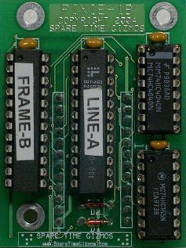
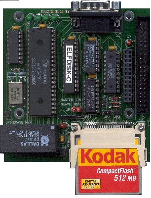
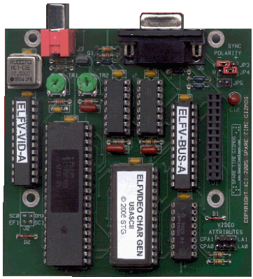
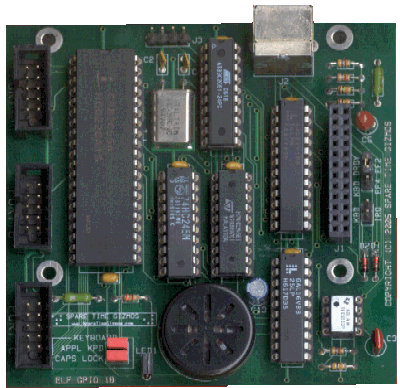
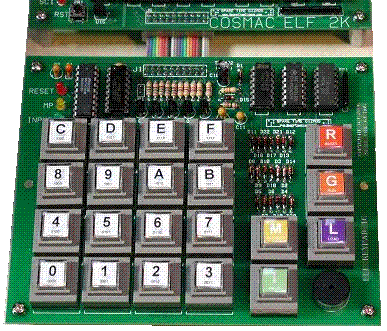
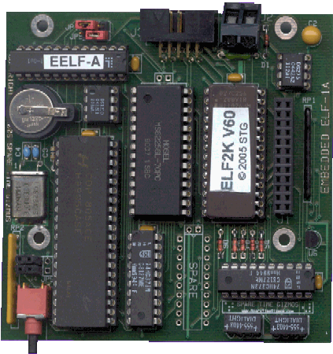

Elf 2000 Accessories
Elf 2000 Accessories


|
|
|
Spare Time Gizmos has a number of Daughter Boards and other add-ons to make your COSMAC Elf 2000 more fun! STG1681 Pixie Graphics Replacement
STG1861 Pixie Graphics Replacement
 If you can't get a CDP1861 Pixie graphics chip then don't despair - the Spare Time Gizmos STG1861 emulator is built on a small daughter card that fits on top of the main Elf 2000 board and plugs into the CDP1861 socket. The STG1861 uses two PLDs and two 74HCxx TTL chips to emulate the original CDP1861 and is an exact functional replacement for the CDP1861. No software changes are required and, in fact, the software can't tell the difference!By the way, the usefulness of the STG1861 isn't confined to the Elf 2000 - the STG1861 can replace the CDP1861 in in any application, including the original P-E Elf and its many clones.
Disk, UART and RTC Board
 The Disk/UART/RTC board is a PCB about 3.5" square that attaches to the upper right corner of the Elf 2000 board. It connects to the main board with a 24 pin stacking connector and mounts to the main board with 0.625" stand offs. Additional I/O boards can still be stacked on top of the disk board, and the disk board doesn't interfere with the STG1861 Pixie Replacement board nor does it obscure the TIL311 displays.The Disk/UART/RTC board contains a CompactFlash interface, including an onboard CompactFlash socket, that's software compatible with the one Mike Riley uses for his ElfOS system. A standard 40 pin male header is provided for connecting a ribbon cable and an external CompactFlash drive. The Disk/UART/RTC board also contains an 8250/16450/16550 UART chip (the same one that's used in the PC) with a programmable baud rate generator and partial modem control. The baud rate generator may be programmed for any speed, standard or otherwise, from 110 to 115,000bps. And finally, the Disk/UART/RTC board contains a time of day clock and non-volatile RAM using the DS12887A, DS12887, DS1287 or MC146818A chips. These are the same clock/calendar chip that is (or was) used in the PC. Each one can keep track of the time of day even with the power off, and provides up to 128 bytes of non-volatile RAM. The Spare Time Gizmos Monitor EPROM contains a full set of power on self test (POST) diagnostics for the serial port, RTC, NVR and CompactFlash interface. The Monitor EPROM also allows the UART to be used as the console serial port, rather than the "bit banged" motherboard port and can auto baud any standard baud rate from 2400 thru 19200bps. When used as a console, the UART works with the built in EPROM languages (BASIC, Forth, EDIT/ASM) and also ElfOS. Finally, the Monitor can save various settings, including the last baud rate and an automatic bootstrap flap, in the non-volatile RAM. The automatic bootstrap flag allows the monitor to boot directly to ElfOS on power up with out any console interaction. COSMAC Elf 2000 Monitor version 60 or later is required to fully support this board.
80 Column Text Video Board
 The Spare Time Gizmos Elf 2000 VT1802 video board is able to generate a real 80 column by 24 line text display on a CGA compatible CRT or RS-170 composite video monitor. Reverse video, underline, and blinking video attributes and four different character sets may be selected and simultaneously displayed under software control. With the proper character generator ROM, the hardware is also capable of displaying simple line and box drawing graphics characters.The VT1802 uses the 1802's DMA system to fetch ASCII characters directly from a buffer anywhere in RAM or EPROM. Unlike the CDP1861 Pixie video, the video timing for the video card is independent of the CPU clock and any CPU crystal frequency up to the CPU's maximum may be used. With a 3 MHz CPU clock, the DMA and interrupt service for the 80 column card uses approximately 50% of the total CPU time. The Spare Time Gizmos Elf 2000 Monitor EPROM contains a VT52 terminal emulator that works with the VT1802 and takes care of all the work necessary for maintaining the display. The firmware allows the video display to be used independently of the console terminal or, if the GPIO PS/2 Keyboard Interface is also present, as a replacement for the console terminal. The video display works with BASIC, Forth, EDIT/ASM, or ElfOS. COSMAC Elf 2000 Monitor version 85 or later is required to fully support this board. Please read the Spare Time Gizmos store policies before ordering. Shipping charges shown are for the US only - international customers please inquire before ordering. Sales tax must be charged on all shipments to California addresses.
If you do not wish to pay by Google Checkout, please contact us with your needs and we'll be happy to accept payment by personal check or money order.
General Purpose I/O Card
 The Spare Time Gizmos Elf 2000 General Purpose I/O board (GPIO), integrates three independent I/O functions onto a single card. The first GPIO function is a PS/2 keyboard interface. A single chip microprocessor on the GPIO card handles the PS/2 protocol, converts the keystrokes to ASCII, and presents the data the 1802 as if it were a simple parallel ASCII keyboard.The GPIO card also contains an 8255 programmable parallel I/O (PPI) chip. The 8255 is a very popular general purpose parallel interface chip that provides 24 I/O bits. The bits can be configured as inputs, outputs, or as an 8 bit bidirectional port with or without handshaking. And finally, the GPIO card contains a speaker for generating tones. Arbitrary tones and even simple music may be generated by 1802 software either by toggling the Q bit or thru an output port. The speaker logic also contains a fixed frequency oscillator that may be used to generate simple beeps without any software intervention. Note that these three GPIO subsystems are functionally independent and if you dont require all of them you can easily omit the unused parts when you build your GPIO card. COSMAC Elf 2000 Monitor version 85 or later is required to fully support this board.
Hexadecimal Keypad
 This option replaces the standard toggle switch Elf 2000 front panel with a push button keypad similar to the Quest Super Elf. Sixteen keys are provided for direct hexadecimal entry, and five additional buttons (RESET, RUN, LOAD, MP and INPUT) are for mode control. The five function keys are illuminated from behind by T1 LEDs, and there is a small beeper that generates a short key click whenever any key is pressed. The Hexadecimal Keypad plugs into the same 20 pin switch panel header already present on the COSMAC Elf 2000. No changes or modifications to the Elf 2000 are required.Please note that we only have non-illuminated push buttons for sale. I'm afraid I don't know where to get the illuminated variety - if you find a source, please post to the newsgroup and let us all know. Please read the Spare Time Gizmos store
policies before ordering. Shipping charges shown are for the US
only - international customers please
inquire before ordering. Sales tax must be charged on all shipments to
California addresses.
The Embedded Elf
 Not an accessory as such, but a complete Elf in itself, the Embedded Elf is a slightly simplified and much smaller version of the Elf 2000. The Embedded Elf is exactly the same size and form factor as the Elf 2000 daughter cards, such as the Disk/UART/RTC card, the 80 Column Video card, or the GPIO General Purpose I/O card. The Embedded Elf has the same expansion bus as the Elf 2000 and stacks perfectly with the daughter cards to form a cute little "cube". The Embedded Elf can run the same software as the Elf 2000 and, in fact, uses the exact same monitor firmware EPROM as the Elf 2000.The primary differences between the Elf 2000 and the Embedded Elf are that the latter lacks the switch interface and the TIL311 displays, although the Embedded Elf does have eight LEDs that are used to display the POST results. The Embedded Elf also lacks an on board voltage regulator and requires an external 5 volt regulated power supply. Finally, the Embedded Elf lacks the CDP1861 Pixie circuit and cannot be used with either the CDP1861 chip or the STG1861 module; however the Embedded Elf will work with the VT1802 80 column video card. The Embedded Elf does have the same non-volatile memory and bit banged serial port with EIA level shifter as the Elf 2000. Please read the Spare Time Gizmos
store policies before ordering. Shipping charges shown are for
the US only - international customers please
inquire before ordering. Sales tax must be charged on all shipments to
California addresses.
| ||||||||||||||||||||||||||||||||||||||||||||||||||||||||||||
Visit these Spare Time Gizmos
|